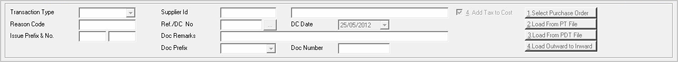

Goods Receipts based on Stock No.
To Add Goods Receipts based on Stock No.
Header Information :

Transaction Type: Select the transaction type from the drop down list. The list can show values as Purchase, Transfer In, Approval Receipt and Miscellaneous Receipts, based on the setting of the System Parameter.
Supplier Id: This caption dynamically changes based on the transaction type selected.
-
For Purchase, the caption is Supplier ID, for Transfer In, the caption is Chain Store and for the other two types, the caption is Customer ID.
-
Enter the value or press F2 to browse and select the value in this field. On pressing F2, a search window pops up. Choose the Supplier id/ Customer id.
On selection of the Supplier Id the supplier’s name is displayed in next field.
Reason Code: Select the reason for inward. This field gets displayed for transaction types other than Purchase. Press F2 to display the catalogued reason codes so that the appropriate one for the current transaction type can be selected.
Ref./DC No: Enter the value or press F2 or click (the PT File browse) to browse in this field and select the reference number of the document received. Choose the Invoice or DC displayed against a specific supplier.
DC Date: Enter the date of reference document.
Issue Prefix & No.: This field is displayed when Approval Receipt is selected as the Transaction Type. Approval receipt is made against an approval issue made earlier. So, enter the prefix and number of the approval issue in this field.
Doc Remarks: Enter remark if any.
Source Tax Code: Enter the tax code or press F2 to browse and select the value in this field. On pressing F2, a search window pops up. Choose the appropriate tax code.
Doc Prefix: Depending on the type of transaction the prefix is displayed automatically provided there is only one prefix for that transaction type. Manual selection is required when there are multiple prefixes.
Doc Number: Displays incremental number for the selected Document.
4.Add Tax to Cost: Check this box if taxes entered in the document are to be considered for computing the cost price.
Select Purchase Order: This is useful to select items against the pending Purchase Order’s.
Note: If a purchase order raised on the selected supplier is pending and the option 1.Select Purchase Order is not selected, then a message Purchase Order Found for Selected Vendor, Do you wish to Select PO is displayed. Click Yes to select the pending Purchase Order. If you select No the cursor moves to the Stock No. column and you can enter the stock number or select the stock number by pressing F2 as per the requirement.
Load from PT File: This option is available based on configuration. Click this option to load item details from PT File.
The item details in the file will be loaded on to items grid only if Supplier ID/ Chain Store ID, Doc Ref Number and Doc Date entered in the respective fields of inwards entry screen matches with that content of the PT file. If not, a proper message will be displayed. A log file (Pt_Validator) is created in the log folder (Shoper\Share\Log) while trying to load a PT File. Indicators are provided in the log file to identify the errors and corrections. If the PT File cannot be loaded (due to format or data type errors), check this log file to verify and correct the errors.
A Goods Inwards done using Load from PT File creates the pricing master for new items and updates the stock master.
Load from PDT File: This option is available based on configuration. Click to load item details from a text file.
If the PDT file format is not configured, the Browse window opens. Select the required PDT file format.
The Open window is displayed for file selection. Choose the file and click Open. The item details will be displayed in the grid.
Load Outward to Inward: This option is available based on configuration. This is useful to send all items in an outward document to any of the stores in the chain. Click to send all the items sent against a goods outward document to an inward document. On clicking the button, the Load Outward to Inward window is displayed.
Items Entry Grid: The combination of the fields available in this grid changes as per the value provided. There are some common fields which are displayed irrespective of the values provided. This grid is populated with values if you load the data from a P.O./ PDT File/ PT File. Click here for more information.
Footer details
Ok: To save the goods inward entry
Cancel: To clear the entries made in goods inward option
Alt + H: Key to display or clear the hot keys list available
Ctrl + Alt + H: Header Extension
Ctrl + Alt + D: Detailed Extension
Ctrl + Alt + F: Footer Extension
F4: To delete an item
F7: To save a transaction
Up/Down arrow: To move across grid
Ctrl + I: To alter MRP of an item
Ctrl + T: To toggle between Item Description and Item Classification
Ctrl + 1: Additional document information
Ctrl + 2: Additional item information
Ctrl + 3: Additional summary information
Ins Key: To create a new item